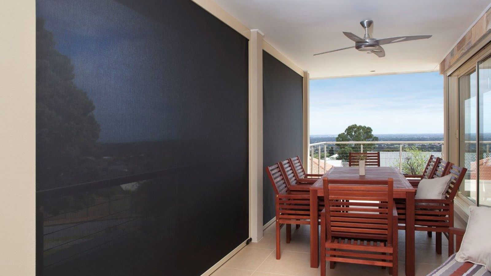

Balconies
Outdoor blinds for balconies and apartments
Outdoor blinds for apartment balconies: getting strata or body corporate approval, choosing a blind that copes with wind at height, and fixing into concrete.
7 min read
A pergola is the most common place to hang an outdoor blind, and the most varied. The frame, the roof and the gap between them decide how the blind goes on.

Short answer: On most pergolas the headbox fixes to the underside or face of the front beam, and the side tracks or guides fix to the posts. Face fit is usually the better choice because pergola posts are rarely perfectly square. Check the beam can take the fixings, and plan for the gap between beam and roof.
Every pergola is built a little differently, but the questions are the same each time: what will the blind hang from, what will the sides attach to, and how will you deal with the gaps a blind cannot cover on its own. Answer those three and the rest of the job is routine.
The headbox — the housing that holds the rolled-up fabric — needs a solid, straight fixing surface across the full width of the opening. On a pergola that is almost always the beam that runs between the posts.
There are two ways to fix to it:
Either way, the beam must be structural timber or metal, not decorative cladding or a fascia board tacked over the frame. If you are not sure what is behind a lined beam, drill a small pilot hole before you commit to a position.
The side tracks or guides fix to the posts, so the post material decides your fixings.
| Frame | Typical fixing | Watch for |
|---|---|---|
| Hardwood or treated pine | Galvanised or stainless timber screws | Splitting near post ends; pre-drill hardwood |
| Steel (SHS / RHS) | Self-drilling tek screws | Thin-walled sections; seal holes to slow rust |
| Aluminium | Stainless self-drilling screws or rivnuts | Galvanic corrosion — use stainless, not zinc-plated |
| Brick or masonry piers | Masonry anchors | Fix into the brick, not the mortar joint |
Posts are where pergolas most often turn out to be out of plumb. Hold a level against each post before measuring. If one leans by more than a few millimetres over the drop, a face fit with packers behind the track will hide it; a reveal fit between the posts will not.
Face fit — mounting across the outside face of the posts and beam — is the default for pergolas. It overlaps the opening on every side, it forgives posts that are not quite parallel, and it seals better against wind-driven rain.
Reveal fit, between the posts and under the beam, looks tidier and keeps the whole blind inside the frame. It only works when the posts are square and parallel and there is at least 110 mm of clear depth for a track-system headbox. Many modern steel and aluminium pergolas meet that standard; many older timber ones do not.
The roof matters because of the gap it leaves above the blind.
Usually the simplest. The roof sheet sits on purlins above the beam, and the blind hangs below the beam. The small gap between beam and roof is open, but it is above head height and mostly lets out warm air rather than letting in weather.
Louvre systems usually have a perimeter beam or gutter with a defined face for accessories, and many manufacturers specify where blinds can and cannot be fixed so the louvres and drainage still work. Check the louvre supplier's guidance before drilling, and keep the headbox clear of the gutter outlets. Expect to face fit to the beam rather than fixing into the gutter itself.
With no roof, a blind gives you shade and privacy on the sides but no rain cover overhead. That is fine for screening, but if the aim is a weatherproof room, the roof is the first problem to solve, not the blinds.
A pergola with blinds on every side still leaks at the corners, at the top, and at the floor. The fixes:
Pergolas are often wider than a single blind should be. Past roughly 5 m, split the opening into two blinds that meet on a centre post. If the pergola has no centre post, either add one or fit two blinds side by side with their tracks sharing a mullion fixed between beam and floor. Two shorter blinds track better, stay straighter in wind and are much easier to lift into place.
Yes, and attached pergolas are often easier. The house wall gives you one solid side, so the blinds only need to cover the open faces. Where a blind meets the house wall, fix the side track straight to the wall with masonry anchors into brick, or into the studs on a clad wall. Check for weep holes, vents and the line of any flashing where the pergola roof meets the house, and keep the track clear of them.
Freestanding pergolas have open sides all round, so they usually need blinds on three or four faces. That makes the corners the main thing to get right: plan which blind's track goes on which face of each corner post before you measure.
With that list in hand, ordering is quick and the blinds go up without surprises.
Most pergolas can take outdoor blinds, provided there is a solid beam to fix the headbox to and posts or walls for the side tracks. Decorative cladding and thin fascia boards are not strong enough on their own.
Face fit suits most pergolas because it overlaps the opening and hides posts that are slightly out of plumb. Reveal fit works when the posts are square and there is at least 110 mm of clear depth for the headbox.
Usually yes, but check the louvre manufacturer's guidance first. Blinds are normally fixed to the perimeter beam, kept clear of the gutter and drainage outlets.
Use stainless steel fixings. Zinc-plated screws in aluminium can cause galvanic corrosion, which shows up as white powder and loose fixings over time.
Keep a single blind to roughly 5 m or less. Wider openings are better split into two blinds meeting on a centre post or mullion.
Balconies
Outdoor blinds for apartment balconies: getting strata or body corporate approval, choosing a blind that copes with wind at height, and fixing into concrete.
7 min read
Approvals
When outdoor blinds need council, heritage, bushfire or strata approval in Australia, when they usually don't, and how to check before you order.
6 min read
Lifespan
How long outdoor blinds typically last by fabric and system, what wears out first, the signs it's time to replace, and how to get more years from yours.
7 min read
Every outdoor blind, awning and roller shutter we make, with fabric and colour options, on the main DIY Blinds store.
View all products